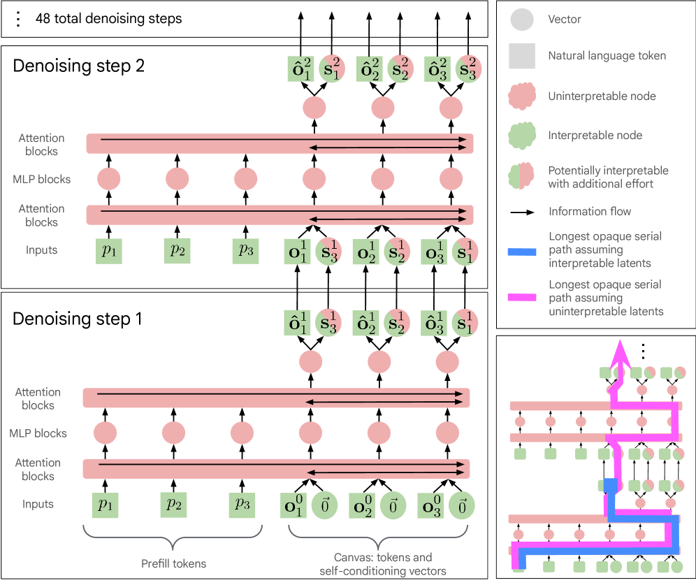
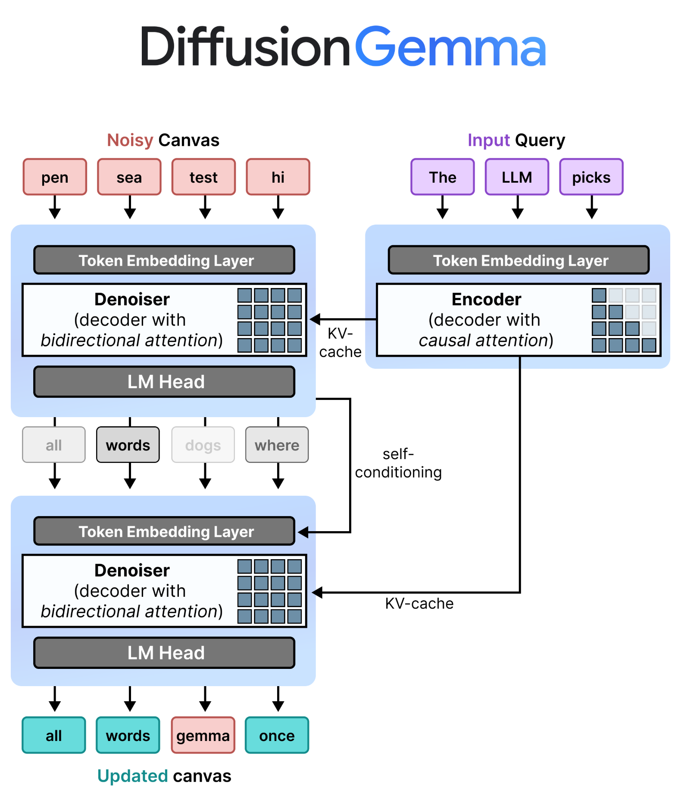

本文详细探讨 Google DeepMind 最近开源的 DiffusionGemma，一个基于离散扩散（Discrete Diffusion）的全新文本生成模型。我们将从自回归的显存瓶颈、文本去噪机制的演进、Encoder-Denoiser 动态架构、分块自回归采样、以及采样调度器等多个维度进行全方位深度解析。
传统的自回归大型语言模型（如 GPT-4, Llama 3, Gemma 等）在文本生成时采用逐个 Token 顺序生成的机制。这种机制在单用户推理（Batch Size = 1）时，会面临极端的显存带宽瓶颈（Memory-Bandwidth Bound）：
DiffusionGemma 颠覆了这一推理范式。它不是每次前向传播预测一个 Token，而是一次性预测和提炼一个包含 256 个 Token 的完整画布（Canvas）：
将扩散（Diffusion）模型从连续空间（如图像像素）引入离散空间（如文本 Token）并非易事。在图像扩散中，我们可以向像素添加高斯噪声（使得红色像素稍微变蓝），但在文本中，无法将 Token "The" 稍微模糊成另一个 Token。为此，学术界与工业界探索了两种主要的离散文本去噪路径：
类似于 BERT 的 Masked Language Modeling (MLM)，该机制在训练时将文本序列中的部分 Token 替换为特殊的 [MASK] 标记：
[MASK] 比例。[MASK] 位置的真实 Token。在每一步中，采样器根据模型预测的置信度，仅保留最确信的部分 Token，替换掉对应的 [MASK]，并在下一步继续预测剩余的 [MASK]。[MASK] 在早期步骤中被模型错误地填充为某个具体 Token，这个 Token 就会被锁定，无法在后续步骤中被修改。这类似于自回归模型“一错再错”的幻觉效应。为了克服掩码扩散的缺陷，DiffusionGemma 采用了更先进的均匀状态扩散机制：
[MASK] 标记，而是从词表中随机、均匀抽样的任意破坏性 Token。| 特性维度 | 掩码扩散 (Masked Diffusion) | 均匀状态扩散 (Uniform State Diffusion) | 自回归生成 (Autoregressive) |
|---|---|---|---|
| 噪声表现 | 显式 [MASK] 标记 |
隐式均匀随机 Token 替换 | 无扩散噪声 |
| 去噪动作 | 逐级填充 [MASK] 空间 |
预测全画布，不满足阈值处重填随机噪声 | 逐个 Token 尾部追加 |
| 自纠错能力 | ❌ 无法修改已填充的 [MASK] |
允许持续修改和纠正错误预测 | ❌ 无法回溯和修改历史 Token |
| 生成步数 | 取决于采样策略（通常 20-50 步） | 固定或自适应步数（如 48 步） | 与生成文本长度 $N$ 严格一致 |

o^t 和 self-conditioning 向量 S^t，而 prompt 侧 KV 在整个去噪循环里保持静态。
这张 technical report 图有两个价值。第一，它把 DiffusionGemma 的数据流拆成了非常明确的三部分：prefill prompt、当前 canvas、跨 step 传递的 self-conditioning。第二，它揭示了一个工程上最重要的事实：Gemma 主干并没有被整套推倒重做，真正被改的是“输入如何组织、attention 如何开关、step 与 step 之间传什么状态”。

diffusion_architecture 图。我已在浏览器中打开原图后截图保存。它把 input query 走 causal encoder、noisy canvas 走 bidirectional denoiser、KV-cache 复用以及 self-conditioning 回路直接画了出来。
DiffusionGemma 并未重新设计一套复杂的网络，而是巧妙地在底层重用了 Gemma 4 26B A4B 开源模型 checkpoint（混合专家架构 MoE，拥有 30 层，词表大小 262K，单 Token 激活 3.8B 参数/8 个专家），并通过一个Encoder-Denoiser 动态模式切换补丁实现了双重功能的融合：
┌────────────────────────┐
│ Prompt: "Write a..." │
└───────────┬────────────┘
│
(Encoder Mode)
Causal Attention
│
▼
┌────────────────┐
│ Static KV │ (Stored in Memory)
│ Cache │
└────────│───────┘
│
(Cross-Attention Guidance)
│
┌───────────────────────────┼───────────────────────────┐
│ Denoiser Loop (48 steps) ▼ │
│ │
│ [Random Canvas] ──► (Denoiser Mode) ──► [Denoised │
│ (256 tokens) Bidirectional Attention Canvas] │
│ │
│ ▲ │
│ └─────────── Self-Conditioning ───────────────┘
└───────────────────────────────────────────────────────┘去噪器如何感知它在上一步做出的预测？
最短答案是：backbone 不是先推翻再重建，而是尽量保留；真正要改的是“解码范式”。以一个标准 decoder-only LLM 为例，所谓 backbone，通常就是下面这些真正承载参数规模和表达能力的部分：
embed_tokens、lm_head。DiffusionGemma 的思路不是把这些主干全部换掉，而是在保留 Gemma 主干权重的前提下，给它包上一层新的离散扩散推理壳。可以把“最少需要改哪里”概括成 6 件事：
C=256 的 noisy canvas。S^t，再并回下一步输入。T 轮“前向 + 采样 + renoise + early stop”循环。| 模块 | 是否保留 LLM backbone | 要改什么 |
|---|---|---|
| Embedding / lm_head | 大体保留 | 继续复用词表与 embedding 空间，但要支持 canvas token 和 self-conditioning 回投。 |
| FFN / MoE / Norm | 基本保留 | 这些是语言能力主干，通常不想动；DiffusionGemma 正是复用了 Gemma 4 的 MoE 主体。 |
| Attention | 结构可复用，行为要改 | 必须支持从 causal 到 bidirectional 的切换，并让 canvas 在每一步读取 prompt 侧上下文。 |
| KV cache | 语义变化最大 | AR 里 KV 是随 token 逐步追加；这里 prompt KV 基本静态，step-to-step 传的是 o^t 和 S^t。 |
| Forward API | 必须改 | 输入不再只是 input_ids，而是 prompt context + noisy canvas + diffusion step + optional self-conditioning。 |
| Generate loop | 必须重写 | 从单步 token sampling 改成多步 denoising loop，再加 multi-canvas 外循环。 |
如果你已经有一个 LLM，不是把 backbone 换成另一个网络才叫 diffusion text；更像是保留原来的 Transformer/MoE 语言主干，把它从“严格因果的单 token 解码器”改造成“读 prompt、并行修 256 个位置、还能跨 step 自我修正的去噪器”。因此最大改动通常不在 FFN，而在 attention mask、状态传递、训练目标、采样循环。
由于去噪器单次只能处理 256 Token 长度的画布，如何生成长文本？ DiffusionGemma 将局部并行扩散与**全局自回归**相结合，实现了**多画布采样（Multi-Canvas Sampling）**：
# 核心数据流概念伪代码
prompt = "Please write a long sci-fi story..."
kv_cache = encoder.prefill(prompt) # 首次 Prefill 生成初始 KV Cache
while not generate_finished:
# 1. 初始化 256 长度的随机画布
canvas = initialize_random_tokens(length=256)
# 2. 逆向迭代去噪循环 (例如 48 步)
for step in range(num_denoising_steps):
# 融合上一步的概率分布特征
conditioned_embeddings = embed(canvas) + self_conditioning(prev_probs)
# 去噪器进行双向 All-to-All 注意力计算，并 cross-attend 到只读的 kv_cache
logits = denoiser.forward(conditioned_embeddings, kv_cache)
# 采样器决定保留哪些 token，重新对低置信度位置进行 noise 覆盖
canvas, prev_probs = sampler.step(logits, canvas)
if adaptive_stopping.should_stop():
break
# 3. 256 Canvas 去噪完成，识别到结束符或填满
finalized_block = canvas
# 4. 自回归扩展：将 finalized_block 视为 prompt 的延续，送入 Encoder
# 追加并更新静态 KV Cache 缓存。之后该 KV Cache 作为下一画布的上下文。
kv_cache = encoder.incremental_prefill(finalized_block, kv_cache)
if eos_token in finalized_block:
generate_finished = True这种机制结合了扩散模型在单块内部极高的并行吞吐量与**自回归模型处理长序列时的优异上下文连贯性**。
DiffusionGemma 的核心控制中心在于其采样器（Sampler）与调度器（Scheduler）的设计，官方推荐了以下标准超参数配置：
为了平衡去噪过程中的**探索（Exploration）**与**收敛（Exploitation）**，Logits 会被除以一个动态温度 $T$。
用于精确控制去噪每一步中保留哪些 Token、丢弃哪些 Token。
"LLM"，熵接近 0）。不需要强行跑满 48 步。如果画布提前收敛，系统会触发自适应早停，以节省宝贵的算力： 同时满足以下两点时停止：
为什么 Diffusion 架构适合解决强约束的多变量协同任务（如数独）？
自回归模型 (AR) 顺序预测： DiffusionGemma 并行协同去噪：
┌───┬───┬───┐ ┌───┬───┬───┐
│ 5 │ 3 │ ? ├──► 必须立刻决定第三格 │ 5 │ 3 │ 4 │ 所有格点在 All-to-All
└───┴───┴───┘ 无法考虑未来冲突 ├───┼───┼───┤ 注意力下同时互相制约，
┌───┬───┬───┐ │ 6 │ ? │ 8 │ 若后期发现冲突，可通过
│ 6 │ ? │ 8 │ 一旦写错，无法修改 ├───┼───┼───┤ Re-noising 机制在后续去噪
└───┴───┴───┘ │ ? │ 9 │ ? │ 步中将错误擦除并重写。
└───┴───┴───┘vLLM 官方已原生集成 DiffusionGemma。可通过以下 OpenAI 兼容的 Server 命令行一键启动：
vllm serve google/diffusiongemma-26B-A4B-it \
--max-model-len 262144 \
--max-num-seqs 4 \
--gpu-memory-utilization 0.85 \
--attention-backend TRITON_ATTN \
--generation-config vllm \
--hf-overrides '{"diffusion_sampler": "entropy_bound", "diffusion_entropy_bound": 0.1}' \
--diffusion-config '{"canvas_length": 256}' \
--enable-chunked-prefill开发者可以使用标准 transformers 库中的 DiffusionGemmaForBlockDiffusion 进行推理：
from transformers import DiffusionGemmaForBlockDiffusion, AutoProcessor
import torch
MODEL_ID = "google/diffusiongemma-26B-A4B-it"
# 1. 初始化处理器与离散扩散专用模型类
processor = AutoProcessor.from_pretrained(MODEL_ID)
model = DiffusionGemmaForBlockDiffusion.from_pretrained(
MODEL_ID,
torch_dtype=torch.bfloat16,
device_map="auto",
)
# 2. 准备对话模版
messages = [
{"role": "user", "content": "Explain the core difference between AR and Diffusion LLMs."}
]
input_ids = processor.apply_chat_template(
messages,
tokenize=True,
add_generation_prompt=True,
return_dict=True,
return_tensors="pt"
).to(model.device)
# 3. 运行多画布扩散采样推理
output = model.generate(**input_ids, max_new_tokens=512)
# 4. 打印解码文本
text = processor.decode(output[0], skip_special_tokens=False)
print(text)DiffusionGemma 离开了传统的自回归生成模式，引入了离散状态的 Uniform State Diffusion 去噪机制。在 256 长度画布的基础上，模型通过 All-to-All 双向自注意力和 Self-Conditioning 自我反馈，实现了一个高度并行的文本生成引擎。这种从显存带宽约束向计算约束的转化，极大地提高了硬件利用率并带来高达 1000+ Tokens/秒 的极限并行解码速度，在需要全局多变量约束协同计算的任务（如数独求解）中表现出独特的自纠错和全局规划能力。
本项目自写引擎 diffusion_engine 中的诸多模块与 DiffusionGemma 在设计理念上高度契合。Causal Mask 的开关机制对应于它的 Dynamic Encoder/Denoiser Attention 切换；core/text_conditioning.py 模块中的 Prompt Embedding Cache 实现对应于它的静态只读 KV Cache 缓存控制；core/scheduler.py 中的步长迭代对应于它的温度 Logits 线性衰减调度器。在完成本课程前述章节后，读者可以在 diffusion_engine/ 的工程基础上更轻松地实现一个针对离散文本扩散模型的自定义扩展采样组件。
本章内容主要整理并参考自以下 DiffusionGemma 官方发布的技术资料与社区指引：